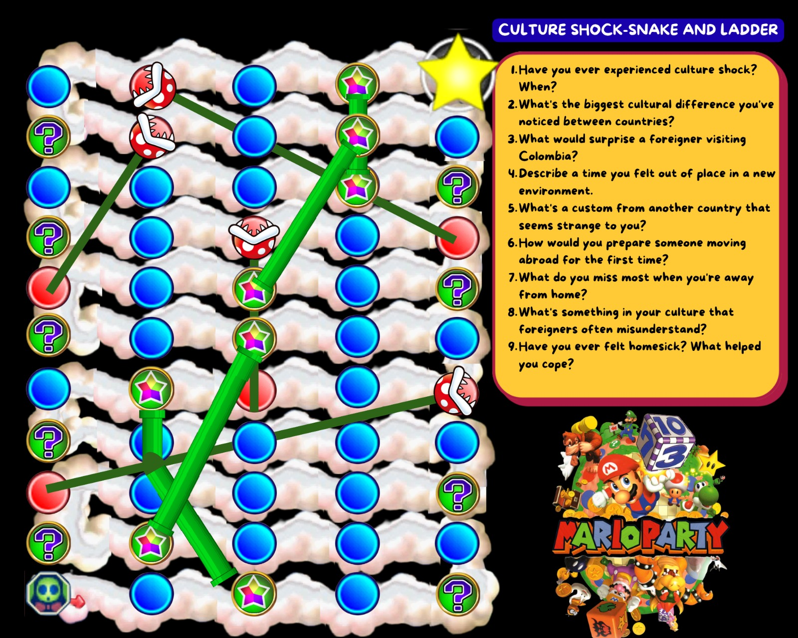
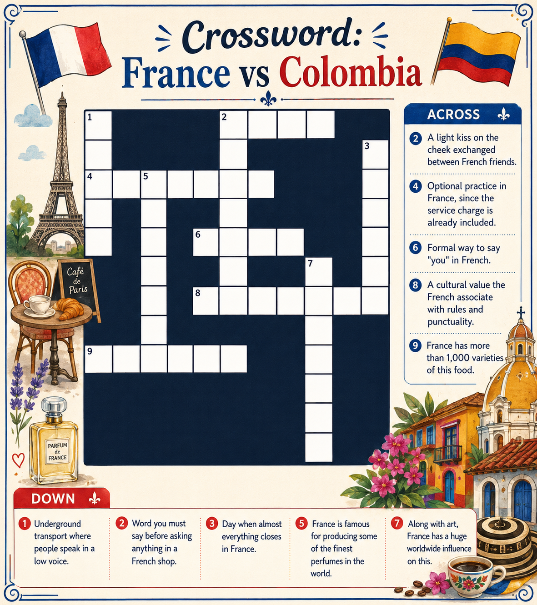
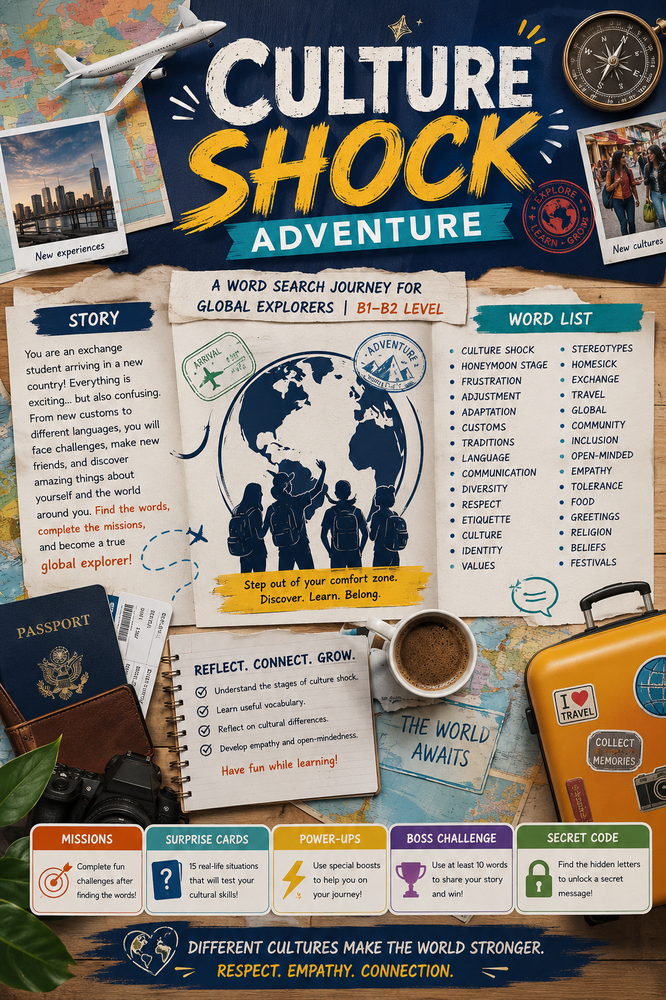

FRANCE 🇫🇷
Explore the heart of European culture, from the lights of Paris to the lavender fields of Provence.
Culture Shocks to Expect
Bonjour is Non-Negotiable
Always start every interaction—be it in a shop or cafe—with a clear "Bonjour". It's the key that unlocks French hospitality.
Sacred Lunch Hours
Everything slows down between 12:00 and 14:00. Many smaller shops close entirely as lunch is a strictly observed social ritual.
Service is 'Discreet'
The customer is not always 'King'. Waiters won't check on you every 5 minutes—they value your privacy and peace while dining.
Effortless Elegance
Parisians value presentation. While not everyone is in a suit, 'athleisure' is rarely seen in the city center restaurants or theaters.
The Sunday Shutdown
Sunday is for family and rest. Major supermarkets, boulangeries (after noon), and boutiques will likely be shuttered. Plan your supplies accordingly!

Culture Shock: Colombia vs. France
France and Colombia are two very different worlds. While Colombia is known for warm people and a spontaneous, lively way of life, French culture deeply values rules, punctuality, privacy, and organization. Here are the specific things that surprise Colombians when adjusting to France.
1. Quiet in Public Space
People speak in a low voice on the metro, trains, and restaurants. Loud conversations, which are completely normal in Colombia, can attract strange looks. French people simply believe public spaces should stay calm.
2. Interacting with Strangers
Chatting in lines or buses is rare. People are more reserved, which can feel cold at first. It doesn't mean they are rude; they just express warmth differently, usually with close friends and family.
3. Always Say "Bonjour" First
Before asking any question in a shop, bakery, or restaurant, you must say "bonjour". Skipping this greeting and going straight to your question is considered impolite, even if your French isn't perfect.
4. Personal Space & Contact
Hugging or touching someone you just met is unusual. French people keep physical distance. However, close friends greet with "la bise" (a light kiss on each cheek), which is completely different from a hug.
5. Lines and Rules
The French respect lines very strictly, even without supervision. Cutting in line or ignoring traffic rules is seen as a serious lack of respect, unlike the more flexible approaches sometimes seen in Colombia.
6. Perfume Tradition
France is famous for producing some of the finest perfumes in the world. Although some visitors notice unpleasant smells in certain places, like older metro stations, perfume remains an important part of daily culture.
Before You Go: Practical Things to Keep in Mind
- Pack for the weather: Temperatures are often lower than in most of Colombia. Bring layers and a good jacket.
- Learn basic French phrases: Simple words like "bonjour", "merci", and "s'il vous plaît" go a long way.
- Power adapters: Bring a European plug adapter since outlets are different from Colombian ones.
- Transport cards: If staying several days, getting a pass is cheaper and cleaner than single tickets.
- Be ready to walk: French cities are designed for walking; comfortable shoes make a huge difference.
- Plan for Sundays: Do your grocery shopping earlier in the week as businesses close on weekends.
- Carry loose coins: Essential for public restrooms, which sometimes charge a small fee.
- Basic courtesy: Always say "bonjour" and "au revoir" when entering or leaving any shop.
- August vacations: Many locals take vacations in August, meaning smaller businesses might close for weeks.
- Don't take it personally: A quieter, formal impression from locals is cultural, not a sign of dislike.
Want the complete cultural breakdown?
Read the full research paper covering Tipping Culture, Direct Service, Tu vs Vous and Cheese Tradition.
Cultural Mini-Games
Test your intuition and adapt to Colombian customs with these quick challenges.

Snake-LaddThe 'Shock-Snake and Ladders' Challenge
Are you ready for the ultimate challenge? The classic Snakes and Ladders is back, reimagined in the Mario Party universe. The goal is simple but full of adrenaline: the first player to cross the finish line wins! Along the way, the iconic green pipes will serve as ladders to help you climb up the board, but stay alert—piranha plants are lurking, ready to make you fall. Plus, the question squares will challenge you with some questions related to the “culture shock” module. Let the game begin, and may luck be on your side!
Play Game sports_esports
CrosswordFrance Crossword
Do you think you know French etiquette? Challenge your friends (or yourself) at this cultural crossroads. Discover the secrets behind France in this language learning adventure, dare to solve the culture shock and master essential vocabulary!
Play Game sports_esports
Word SearchEscape the Culture Shock
A Python/Pygame word search adventure! Find hidden cultural words, complete situational missions, survive surprise events, and pass the final migration interview.
Play Game sports_esportsSpeak Like a Local
Master these 20 French slang terms to blend in with the locals at any brasserie.